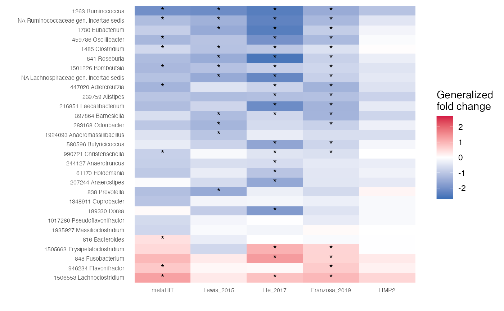
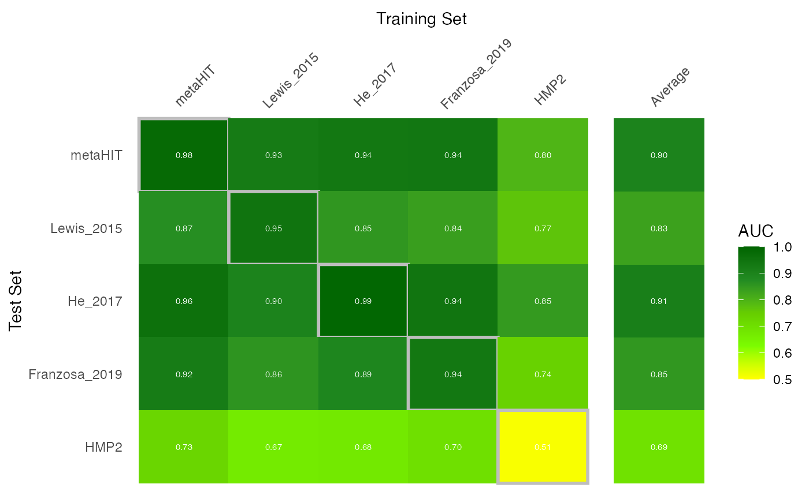
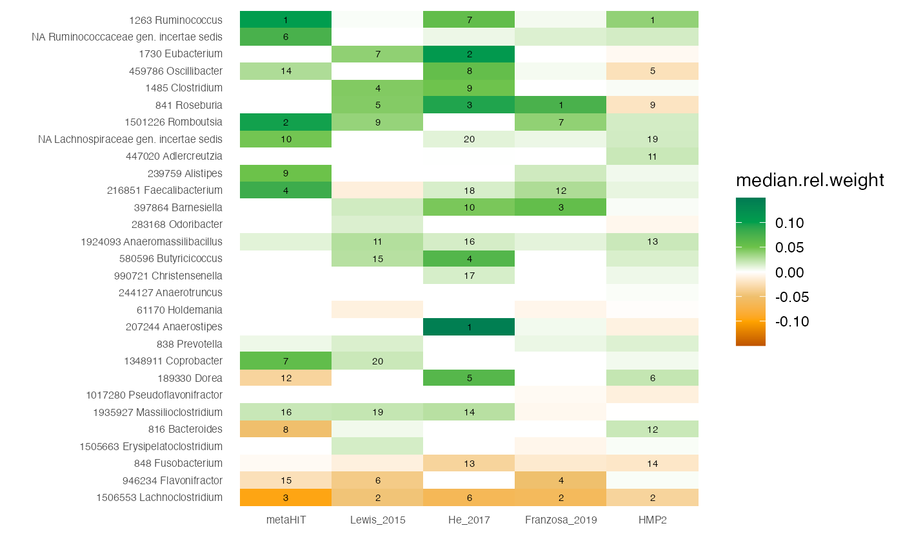

Meta-analysis using SIAMCAT
Jakob Wirbel, and Georg Zeller
EMBL Heidelberggeorg.zeller@embl.de
Date last modified: 2020-11-05
SIAMCAT_meta.RmdAbout This Vignette
In this vignette, we want to demonstrate how SIAMCAT can facilitate metagenomic meta-analyses, focussing both on association testing and ML workflows. As an example, we use five different studies of Crohn’s disease (CD), since we have taxonomic profiles from five different metagenomic datasets available. Those studies are:
Setup
library("tidyverse")
library("SIAMCAT")First, we load the data for all studies, which are available for download from the EMBL cluster. The raw data have been preprocessed and taxonomically profiled with mOTUs2 and were then aggregated at genus level.
# base url for data download
data.location <- 'https://www.embl.de/download/zeller/'
# datasets
datasets <- c('metaHIT', 'Lewis_2015', 'He_2017', 'Franzosa_2019', 'HMP2')
# metadata
meta.all <- read_tsv(paste0(data.location, 'CD_meta/meta_all.tsv'))
# features
feat <- read.table(paste0(data.location, 'CD_meta/feat_genus.tsv'),
check.names = FALSE, stringsAsFactors = FALSE, quote = '',
sep='\t')
feat <- as.matrix(feat)
# check that metadata and features agree
stopifnot(all(colnames(feat) == meta.all$Sample_ID))Let us have a look at the distribution of groups across the studies
table(meta.all$Study, meta.all$Group)
##
## CD CTR
## Franzosa_2019 88 56
## He_2017 49 53
## HMP2 583 357
## Lewis_2015 294 25
## metaHIT 21 71Some of the studies contain more than one sample for the same subject. For example, the HMP2 publication focussed on the longitudinal aspect of CD. Therefore. we want to take this into account when training and evaluating the machine learning model (see the vignette about Machine learning pitfalls) and when performing the association testing. Thus, it will be convenient to create a second metadata table containing a single entry for each individual.
Compare Associations
Compute Associations with SIAMCAT
To test for associations, we can encapsulate each dataset into a different SIAMCAT object and use the check.associations function:
assoc.list <- list()
for (d in datasets){
# filter metadata and convert to dataframe
meta.train <- meta.ind %>%
filter(Study==d) %>%
as.data.frame()
rownames(meta.train) <- meta.train$Sample_ID
# create SIAMCAT object
sc.obj <- siamcat(feat=feat, meta=meta.train, label='Group', case='CD')
# test for associations
sc.obj <- check.associations(sc.obj, detect.lim = 1e-05,
feature.type = 'original',
fn.plot = paste0('./assoc_plot_',
d, '.pdf'))
# extract the associations and save them in the assoc.list
temp <- associations(sc.obj)
temp$genus <- rownames(temp)
assoc.list[[d]] <- temp %>%
select(genus, fc, auc, p.adj) %>%
mutate(Study=d)
}
# combine all associations
df.assoc <- bind_rows(assoc.list)
df.assoc <- df.assoc %>% filter(genus!='unclassified')
head(df.assoc)
## genus fc auc p.adj Study
## 1 159730 Thermovenabulum 0 0.5 NaN metaHIT
## 2 42447 Anaerobranca 0 0.5 NaN metaHIT
## 3 1562 Desulfotomaculum 0 0.5 NaN metaHIT
## 4 60919 Sanguibacter 0 0.5 NaN metaHIT
## 5 357 Agrobacterium 0 0.5 NaN metaHIT
## 6 392332 Geoalkalibacter 0 0.5 NaN metaHITPlot Heatmap for Interesting Genera
Now, we can compare the associations stored in the df.assoc tibble. For example, we can extract features which are very strongly associated with the label (single-feature AUROC > 0.75 or < 0.25) in at least one of the studies and plot the generalized fold change as heatmap.
genera.of.interest <- df.assoc %>%
group_by(genus) %>%
summarise(m=mean(auc), n.filt=any(auc < 0.25 | auc > 0.75),
.groups='keep') %>%
filter(n.filt) %>%
arrange(m)After we extracted the genera, we plot them:
df.assoc %>%
# take only genera of interest
filter(genus %in% genera.of.interest$genus) %>%
# convert to factor to enforce an ordering by mean AUC
mutate(genus=factor(genus, levels = rev(genera.of.interest$genus))) %>%
# convert to factor to enforce ordering again
mutate(Study=factor(Study, levels = datasets)) %>%
# annotate the cells in the heatmap with stars
mutate(l=case_when(p.adj < 0.01~'*', TRUE~'')) %>%
ggplot(aes(y=genus, x=Study, fill=fc)) +
geom_tile() +
scale_fill_gradient2(low = '#3B6FB6', high='#D41645', mid = 'white',
limits=c(-2.7, 2.7),
name='Generalized\nfold change') +
theme_minimal() +
geom_text(aes(label=l)) +
theme(panel.grid = element_blank()) +
xlab('') + ylab('') +
theme(axis.text = element_text(size=6))
Study as Confounding Factor
Additionally, we can check how differences between studies might influence the variance of specific genera. To do so, we create a singel SIAMCAT object which holds the complete datasets and then we run the check.confounder function.
df.meta <- meta.ind %>%
as.data.frame()
rownames(df.meta) <- df.meta$Sample_ID
sc.obj <- siamcat(feat=feat, meta=df.meta, label='Group', case='CD')
## + starting create.label
## Label used as case:
## CD
## Label used as control:
## CTR
## + finished create.label.from.metadata in 0.001 s
## + starting validate.data
## +++ checking overlap between labels and features
## + Keeping labels of 504 sample(s).
## +++ checking sample number per class
## +++ checking overlap between samples and metadata
## + finished validate.data in 0.071 s
check.confounders(sc.obj, fn.plot = './confounder_plot_cd_meta.pdf',
feature.type='original')
## Finished checking metadata for confounders, results plotted to: ./confounder_plot_cd_meta.pdf
The resulting variance plot shows that some genera are strongly impacated by differences between studies, other genera not so much. Of note, the genera that vary most with the label (CD vs controls) do not show a lot of variance across studies.
ML Meta-analysis
Train LASSO Models
Lastly, we can perform the machine learning (ML) meta-analysis: we first train one model for each datasets and then apply it to the other datasets using the holdout testing functionality of SIAMCAT. For datasets with repeated samples across subjects, we block the cross-validation for subjects in order not to bias the results (see also the vignette about Machine learning pitfalls).
# create tibble to store all the predictions
auroc.all <- tibble(study.train=character(0),
study.test=character(0),
AUC=double(0))
# and a list to save the trained SIAMCAT objects
sc.list <- list()
for (i in datasets){
# restrict to a single study
meta.train <- meta.all %>%
filter(Study==i) %>%
as.data.frame()
rownames(meta.train) <- meta.train$Sample_ID
## take into account repeated sampling by including a parameters
## in the create.data.split function
## For studies with repeated samples, we want to block the
## cross validation by the column 'Individual_ID'
block <- NULL
if (i %in% c('metaHIT', 'Lewis_2015', 'HMP2')){
block <- 'Individual_ID'
if (i == 'HMP2'){
# for the HMP2 dataset, the number of repeated sample per subject need
# to be reduced, because some subjects have been sampled 20 times,
# other only 5 times
meta.train <- meta.all %>%
filter(Study=='HMP2') %>%
group_by(Individual_ID) %>%
sample_n(5, replace = TRUE) %>%
distinct() %>%
as.data.frame()
rownames(meta.train) <- meta.train$Sample_ID
}
}
# create SIAMCAT object
sc.obj.train <- siamcat(feat=feat, meta=meta.train,
label='Group', case='CD')
# normalize features
sc.obj.train <- normalize.features(sc.obj.train, norm.method = 'log.std',
norm.param=list(log.n0=1e-05,
sd.min.q=0),
feature.type = 'original')
# Create data split
sc.obj.train <- create.data.split(sc.obj.train,
num.folds = 10, num.resample = 10,
inseparable = block)
# train LASSO model
sc.obj.train <- train.model(sc.obj.train, method='lasso')
## apply trained models to other datasets
# loop through datasets again
for (i2 in datasets){
if (i == i2){
# make and evaluate cross-validation predictions (on the same dataset)
sc.obj.train <- make.predictions(sc.obj.train)
sc.obj.train <- evaluate.predictions(sc.obj.train)
auroc.all <- auroc.all %>%
add_row(study.train=i, study.test=i,
AUC=eval_data(sc.obj.train)$auroc %>% as.double())
} else {
# make and evaluate on the external datasets
# use meta.ind here, since we want only one sample per subject!
meta.test <- meta.ind %>%
filter(Study==i2) %>%
as.data.frame()
rownames(meta.test) <- meta.test$Sample_ID
sc.obj.test <- siamcat(feat=feat, meta=meta.test,
label='Group', case='CD')
# make holdout predictions
sc.obj.test <- make.predictions(sc.obj.train,
siamcat.holdout = sc.obj.test)
sc.obj.test <- evaluate.predictions(sc.obj.test)
auroc.all <- auroc.all %>%
add_row(study.train=i, study.test=i2,
AUC=eval_data(sc.obj.test)$auroc %>% as.double())
}
}
# save the trained model
sc.list[[i]] <- sc.obj.train
}After we trained and applied all models, we can calculate the test average for each dataset:
test.average <- auroc.all %>%
filter(study.train!=study.test) %>%
group_by(study.test) %>%
summarise(AUC=mean(AUC), .groups='drop') %>%
mutate(study.train="Average")Now that we have the AUROC values, we can plot them into a nice heatmap:
# combine AUROC values with test average
bind_rows(auroc.all, test.average) %>%
# highlight cross validation versus transfer results
mutate(CV=study.train == study.test) %>%
# for facetting later
mutate(split=case_when(study.train=='Average'~'Average',
TRUE~'none')) %>%
mutate(split=factor(split, levels = c('none', 'Average'))) %>%
# convert to factor to enforce ordering
mutate(study.train=factor(study.train, levels = c(datasets, 'Average'))) %>%
mutate(study.test=factor(study.test, levels=c(rev(datasets),'Average'))) %>%
ggplot(aes(y=study.test, x=study.train, fill=AUC, size=CV, color=CV)) +
geom_tile() + theme_minimal() +
# text in tiles
geom_text(aes_string(label="format(AUC, digits=2)"),
col='white', size=2)+
# color scheme
scale_fill_gradientn(colours=rev(c('darkgreen','forestgreen',
'chartreuse3','lawngreen',
'yellow')), limits=c(0.5, 1)) +
# axis position/remove boxes/ticks/facet background/etc.
scale_x_discrete(position='top') +
theme(axis.line=element_blank(),
axis.ticks = element_blank(),
axis.text.x.top = element_text(angle=45, hjust=.1),
panel.grid=element_blank(),
panel.border=element_blank(),
strip.background = element_blank(),
strip.text = element_blank()) +
xlab('Training Set') + ylab('Test Set') +
scale_color_manual(values=c('#FFFFFF00', 'grey'), guide=FALSE) +
scale_size_manual(values=c(0, 1), guide=FALSE) +
facet_grid(~split, scales = 'free', space = 'free')
Investigate Feature Weights
Now that we the trained models (and we saved them in the sc.list object), we can also extract the model weights using SIAMCAT and compare to the associations we computed above.
weight.list <- list()
for (d in datasets){
sc.obj.train <- sc.list[[d]]
# extract the feature weights out of the SIAMCAT object
temp <- feature_weights(sc.obj.train)
temp$genus <- rownames(temp)
# save selected info in the weight.list
weight.list[[d]] <- temp %>%
select(genus, median.rel.weight, mean.rel.weight, percentage) %>%
mutate(Study=d) %>%
mutate(r.med=rank(-abs(median.rel.weight)),
r.mean=rank(-abs(mean.rel.weight)))
}
# combine all feature weights into a single tibble
df.weights <- bind_rows(weight.list)
df.weights <- df.weights %>% filter(genus!='unclassified')Using this, we can plot another heatmap with the weights, focussing on the genera of interest for which we plotted the associations as heatmap above.
# compute absolute feature weights
abs.weights <- df.weights %>%
group_by(Study) %>%
summarise(sum.median=sum(abs(median.rel.weight)),
sum.mean=sum(abs(mean.rel.weight)),
.groups='drop')
df.weights %>%
full_join(abs.weights) %>%
# normalize by the absolute model size
mutate(median.rel.weight=median.rel.weight/sum.median) %>%
# only include genera of interest
filter(genus %in% genera.of.interest$genus) %>%
# highlight feature rank for the top 20 features
mutate(r.med=case_when(r.med > 20~NA_real_, TRUE~r.med)) %>%
# enforce the correct ordering by converting to factors again
mutate(genus=factor(genus, levels = rev(genera.of.interest$genus))) %>%
mutate(Study=factor(Study, levels = datasets)) %>%
ggplot(aes(y=genus, x=Study, fill=median.rel.weight)) +
geom_tile() +
scale_fill_gradientn(colours=rev(
c('#007A53', '#009F4D', "#6CC24A", 'white',
"#EFC06E", "#FFA300", '#BE5400')),
limits=c(-0.15, 0.15)) +
theme_minimal() +
geom_text(aes(label=r.med), col='black', size= 2) +
theme(panel.grid = element_blank()) +
xlab('') + ylab('') +
theme(axis.text = element_text(size=6))
## Joining, by = "Study"
Session Info
sessionInfo()
## R version 4.0.2 (2020-06-22)
## Platform: x86_64-apple-darwin17.0 (64-bit)
## Running under: macOS Catalina 10.15.5
##
## Matrix products: default
## BLAS: /Library/Frameworks/R.framework/Versions/4.0/Resources/lib/libRblas.dylib
## LAPACK: /Library/Frameworks/R.framework/Versions/4.0/Resources/lib/libRlapack.dylib
##
## locale:
## [1] en_US.UTF-8/en_US.UTF-8/en_US.UTF-8/C/en_US.UTF-8/en_US.UTF-8
##
## attached base packages:
## [1] stats graphics grDevices utils datasets methods base
##
## other attached packages:
## [1] SIAMCAT_1.11.0 phyloseq_1.32.0 mlr_2.18.0 ParamHelpers_1.14
## [5] forcats_0.5.0 stringr_1.4.0 dplyr_1.0.2 purrr_0.3.4
## [9] readr_1.4.0 tidyr_1.1.2 tibble_3.0.4 ggplot2_3.3.2
## [13] tidyverse_1.3.0 BiocStyle_2.16.1
##
## loaded via a namespace (and not attached):
## [1] colorspace_2.0-0 ellipsis_0.3.1 rprojroot_1.3-2
## [4] XVector_0.28.0 fs_1.5.0 rstudioapi_0.12
## [7] farver_2.0.3 fansi_0.4.1 lubridate_1.7.9
## [10] xml2_1.3.2 PRROC_1.3.1 codetools_0.2-18
## [13] splines_4.0.2 knitr_1.30 ade4_1.7-16
## [16] jsonlite_1.7.1 pROC_1.16.2 gridBase_0.4-7
## [19] broom_0.7.2 cluster_2.1.0 dbplyr_2.0.0
## [22] BiocManager_1.30.10 compiler_4.0.2 httr_1.4.2
## [25] backports_1.2.0 assertthat_0.2.1 Matrix_1.2-18
## [28] cli_2.1.0 htmltools_0.5.0 prettyunits_1.1.1
## [31] tools_4.0.2 igraph_1.2.6 gtable_0.3.0
## [34] glue_1.4.2 reshape2_1.4.4 LiblineaR_2.10-8
## [37] fastmatch_1.1-0 Rcpp_1.0.5 parallelMap_1.5.0
## [40] Biobase_2.48.0 cellranger_1.1.0 pkgdown_1.6.1
## [43] vctrs_0.3.4 Biostrings_2.56.0 multtest_2.44.0
## [46] ape_5.4-1 nlme_3.1-150 iterators_1.0.13
## [49] xfun_0.19 rvest_0.3.6 lifecycle_0.2.0
## [52] beanplot_1.2 zlibbioc_1.34.0 MASS_7.3-53
## [55] scales_1.1.1 ragg_0.4.0 hms_0.5.3
## [58] parallel_4.0.2 biomformat_1.16.0 rhdf5_2.32.4
## [61] RColorBrewer_1.1-2 BBmisc_1.11 curl_4.3
## [64] yaml_2.2.1 gridExtra_2.3 memoise_1.1.0
## [67] stringi_1.5.3 S4Vectors_0.26.1 desc_1.2.0
## [70] corrplot_0.84 foreach_1.5.1 checkmate_2.0.0
## [73] permute_0.9-5 BiocGenerics_0.34.0 shape_1.4.5
## [76] matrixStats_0.57.0 rlang_0.4.8 pkgconfig_2.0.3
## [79] systemfonts_0.3.2 evaluate_0.14 lattice_0.20-41
## [82] Rhdf5lib_1.10.1 labeling_0.4.2 tidyselect_1.1.0
## [85] plyr_1.8.6 magrittr_1.5 bookdown_0.21
## [88] R6_2.5.0 IRanges_2.22.2 generics_0.1.0
## [91] DBI_1.1.0 pillar_1.4.6 haven_2.3.1
## [94] withr_2.3.0 mgcv_1.8-33 survival_3.2-7
## [97] modelr_0.1.8 crayon_1.3.4 rmarkdown_2.5
## [100] progress_1.2.2 grid_4.0.2 readxl_1.3.1
## [103] data.table_1.13.2 vegan_2.5-6 infotheo_1.2.0
## [106] reprex_0.3.0 digest_0.6.27 textshaping_0.1.2
## [109] glmnet_4.0-2 stats4_4.0.2 munsell_0.5.0